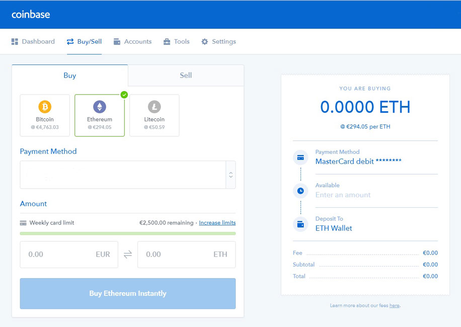
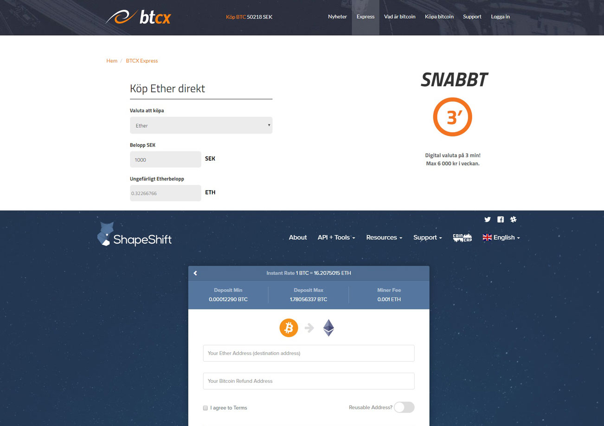
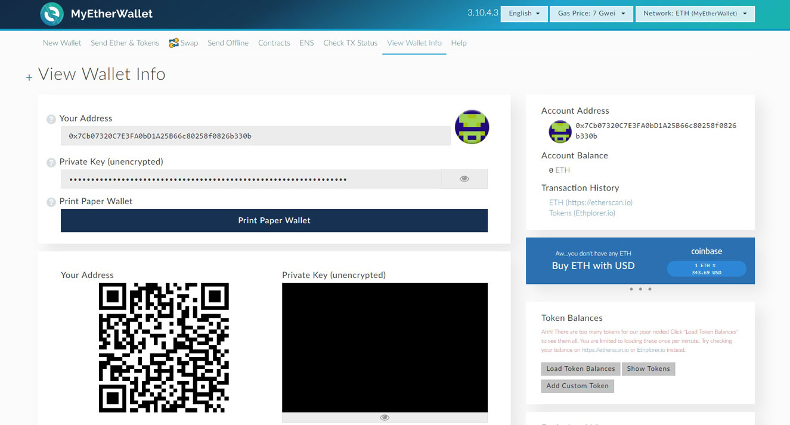

Vad är Ethereum?
Ethereum är en plattform där utvecklare kan bygga och implementera decentraliserade applikationer. Plattformen bygger på blockchain-teknologin, som även gjorde Bitcoin så framgångsrikt. För att driva applikationerna på plattformen så används Ether, vilket är Ethereums egna krypto-token. Förutom att användas som drivmedel så fungerar Ether som vilken annan bytbar kryptovaluta som helst, likt Bitcoin.
En stor orsak bakom Ethereums framgång är möjligheten att koda så kallade “smart contracts” på plattformen. Dessa smarta kontrakt innehåller i grund och botten en uppsättning regler och exekveras enligt dessa regler utan kompromiss och utan möjlighet till korruption. Kontrakten är öppna för allmänheten att granska och är på så sätt fullt tillförlitliga. Plattformen lanserades Juli 2015 och har sedan dess klättrat snabbt inom kryptovärlden. Ethereum är i nuläget den kryptovaluta med näst högst värde, tätt bakom Bitcoin.
Blockchain
Blockchain är den underliggande teknologin bakom Ethereum och uppfanns av Bitcoins skapare, Satoshi Nakamoto. Teknologin gör det möjligt att bokföra alla transaktioner på nätverket genom att successivt lägga till transaktioner i små block. Blocken kontrolleras sedan av så kallade “miners” och läggs till i den ständigt växande kedjan av block. Blockkedjan är öppen för alla att se. Alla datorer som är uppkopplade mot nätverket äger hela blockkedjan och alla måste tillsammans enas om att varenda transaktion har gått till på rätt sätt för att den skall föras in i kedjan. På så sätt krävs ingen central bank, som i vanliga fall styr denna funktion.
Vad är skillnaden mot Bitcoin?
Bitcoin är en enskild applikation på blockchain-teknologin vars funktion möjliggör digitala betalningar mellan två parter, utan mellanhand, och med Bitcoin som valuta. Ethereum är istället en plattform där i princip vilken typ av applikation som helst kan byggas. Till Ethereum finns ett eget Turingkomplett programmeringsspråk, Solidity. Fördelarna med att gå över från centraliserade till decentraliserade applikationer är många. Man kan bland annat förvänta sig dessa fördelar när en app väl ligger på blockkedjan:
- Kan inte gå ner eller stängas av.
- Tar bort möjligheten för korruption.
- Försvårar möjligheten för skadliga attacker.
Ether kan användas på samma sätt som Bitcoin genom att fungera som en digital valuta. Men Ether fyller även funktionen som drivmedel till de decentraliserade applikationerna som byggs på Ethereum.
Decentraliserade applikationer
Nedan följer några exempel på decentraliserade applikationer (dapps) som redan utvecklas på Ethereum.
Golem
Golem är en tjänst där användare kan hyra ut en del av sin dators processorkraft och får kryptovaluta
i gengäld. Alla användare skapar tillsammans en superdator som kan användas av andra användare i situationer
där en stor datorkraft behövs. T.ex vid grafikrendering och svåra vetenskapliga beräkningar.
Augur
Augur är en plattform där användare förutspår kommande händelser och “vinner” kryptovaluta om dennes
förutsägelse är korrekt. I grund och botten erbjuder Augur möjligheten att betta utan att blanda in
bettingbolag, samt att utbudet av bets kommer att vara så gott som obegränsat. Alltså inte bara sport.
Eftersom det är smarta kontrakt som styr utdelningen så kan man vara säker på att vinsten går till rätt person.
Exempel: “Kommer Stockholm att få mer än 220 soltimmar under augusti 2017?”. Efter att augusti är slut så hämtas data från ett externt orakel. Det smarta kontraktet exekverar sig själv och vet - enligt dess oföränderliga kod - hur det skall skicka transaktioner så att de som förutspådde rätt får sin utdelning.
Basic Attention Token
Bakom Basic Attention Token finner vi Brendan Eich, grundaren av det populära skriptspråket Javascript. Med en egen webbläsare så siktar utvecklarna på att revolutionera hur annonsering fungerar på internet. Bland annat så känner webbläsaren av hur mycket uppmärksamhet användaren lägger på varje annons och kan med hjälp av detta kalkylera priset som företaget bakom annonsen skall betala.
Den andra stora delen av denna token är att användarna av webbläsaren får kryptovaluta genom att titta på annonser.
Golem
Golem är en tjänst där användare kan hyra ut en del av sin dators processorkraft och får kryptovaluta i gengäld. Alla användare skapar tillsammans en superdator som kan användas av andra användare i situationer där en stor datorkraft behövs. T.ex vid grafikrendering och svåra vetenskapliga beräkningar.
Augur
Augur är en plattform där användare förutspår kommande händelser och “vinner” kryptovaluta om dennes förutsägelse är korrekt. I grund och botten erbjuder Augur möjligheten att betta utan att blanda in bettingbolag, samt att utbudet av bets kommer att vara så gott som obegränsat. Alltså inte bara sport. Eftersom det är smarta kontrakt som styr utdelningen så kan man vara säker på att vinsten går till rätt person.
Exempel: “Kommer Stockholm att få mer än 220 soltimmar under augusti 2017?”. Efter att augusti är slut så hämtas data från ett externt orakel. Det smarta kontraktet exekverar sig själv och vet - enligt dess oföränderliga kod - hur det skall skicka transaktioner så att de som förutspådde rätt får sin utdelning.
Basic Attention Token
Bakom Basic Attention Token finner vi Brendan Eich, grundaren av det populära skriptspråket Javascript. Med en egen webbläsare så siktar utvecklarna på att revolutionera hur annonsering fungerar på internet. Bland annat så känner webbläsaren av hur mycket uppmärksamhet användaren lägger på varje annons och kan med hjälp av detta kalkylera priset som företaget bakom annonsen skall betala.
Den andra stora delen av denna token är att användarna av webbläsaren får kryptovaluta genom att titta på annonser.
Alla dessa applikationer är byggda med smarta kontrakt och med Solidity. Men ännu finns mycket att utforska i den decentraliserade världen. Många av de stora applikationerna är förmodligen ännu inte ens påtänkta.
Hur ser framtiden ut?
Ethereum och tekniken bakom plattformen är fortfarande ny och under utveckling. Men framtiden ser mycket spännande ut. Denna typ av teknologi har potential att förändra och förbättra många delar av samhället. Finanssektorn. Försäkringssektorn. Hälsovårdssektorn. Fastighetssektorn. Och så vidare. Alla kan med fördel utvecklas med hjälp av denna typ av teknologi.
Det är därför vi även ser hur företag, institutioner, banker och t.om länder har börjat experimentera med bland annat Ethereum.
Hur köper man Ethereum?
Det finns några olika sätt att köpa Ethereum, eller rättare sagt Ether (Ethereums valuta). I Sverige finns det ingen börs som säljer Ether, men nedan följer de smidigaste sätten att införskaffa Ether på andra sätt.
Coinbase
På Coinbase går det att köpa Ether med både kortbetalning och banköverföring.
I Sverige betalar man en avgift på 4% vid kortbetalning. Banköverföring är fritt från avgifter men tar 2-3 dagar innan pengarna kommer in på kontot. För att kunna köpa på Coinbase så behöver man verifiera sig genom att skicka in en bild på en ID-handling.
Länk: www.coinbase.com
BTCX
Vill/kan man inte köpa med ovanstående metod så går det att köpa Bitcoin och sedan omvandla det till Ether. På den svenska marknadsplatsen BTCX går det att köpa Bitcoin med Swish. För att sedan omvandla sina Bitcoins till Ether används smidigast Shapeshift.
Denna metod innebär en högre avgift på sitt köp. BTCX tar cirka 7% i avgifter vid köp från dem.
Länkar: www.bt.cx , www.shapeshift.io
Hur förvarar man Ether?
Eftersom det inte finns någon bank som styr din Ether så är du själv fullt ansvarig för ditt konto/plånbok. Här nedan listar vi de vanligaste sätten att förvara sin Ether på.
Exchange
Det lättaste sättet för nybörjare är att låta sin Ether ligga på en så kallad exchange, exempelvis Coinbase.
- + Användarvänligt.
- + Gratis.
- - Du äger inte själv nycklarna till din plånbok.
- - Om din exchange blir t.ex hackad så kan du förlora all din Ether.
Vi rekommenderar att inte förvara några större summor av Ether på en exchange.
Paper Wallet
Det finns verktyg på internet för att generera ett Ethereum-konto med tillhörande nyckel, som du sedan kan skriva ut. Eftersom pappret enbart finns i den fysiska världen så kan nyckeln inte hackas, så länge du inte använder kontot online. Därför är detta enbart att rekommendera om du inte har tänkt att utföra några transaktioner under en längre period.
Den bästa sådana tjänsten i dagsläget är www.myetherwallet.com.
- + Gratis.
- + Låg risk för att bli hackad.
- - Risk för att tappa bort pappret.
- - Nyckeln kan bli hackad i samband med att du använder den online.
Hardware Wallet
Det säkraste sättet att förvara sin Ether på är att köpa en hardware wallet. Då exponeras aldrig ditt kontos nyckel till omvärlden, utan ligger istället säkert krypterad i din hardware wallet - som låses upp med en PIN-kod.
Vi rekommenderar Ledger Nano S eller TREZOR Wallet.
- + Minimal risk för att bli hackad.
- + Regelbundna transaktioner kan utföras utan risk.
- - Kostar.